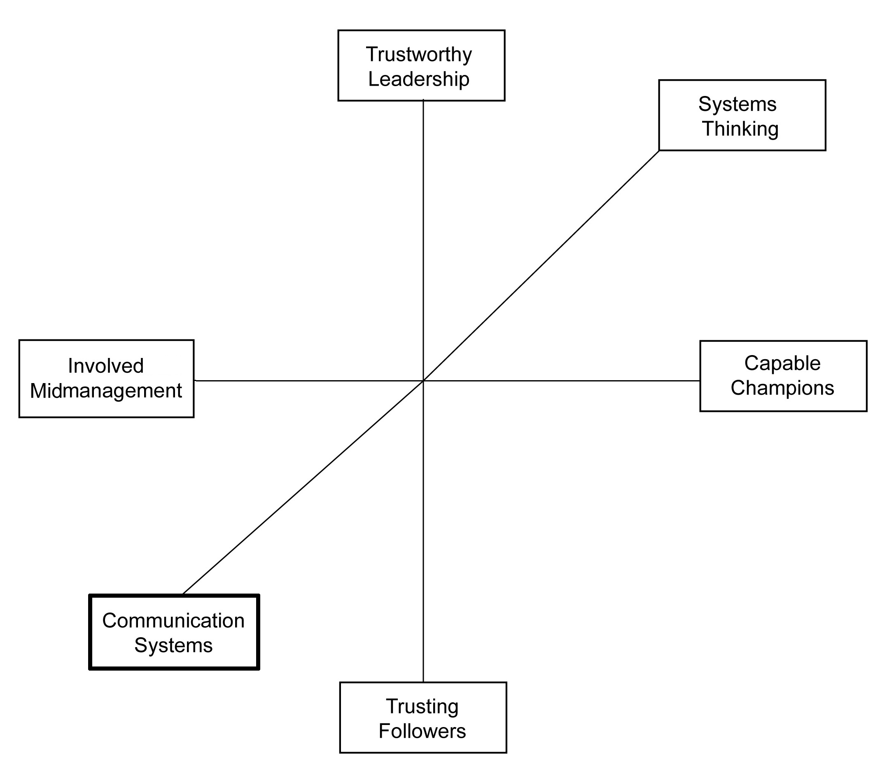

Once again, we conclude our chapter discussion with seven action items that can be pursued to develop this particular dimension of organizational capacity for change. These suggestions are not comprehensive, but research and common sense suggest that they can work to enhance your communication system.
In a 1998 survey of 480 companies and public organizations by the National Association of Colleges and Employers, communication abilities are ranked number one among personal qualities of college graduates sought by employers. Work experience and motivation are second and third.Bennett (2000), p. 73. Clearly, one of the reasons why communication skills are so important is that these skills are essential for facilitating organizational change. A less obvious reason why good communicators are essential is that these individuals understand how to design and enhance the communication systems within an organization so that information flows more effectively.
For example, Rob Goffee and Gareth Jones argue that effective leaders “communicate with care.” Communicating with care means that the leaders choose their channels of communication strategically, tailor their message to the aims of the change initiative, authentically disclose intimate details when appropriate, and are very sensitive to the pace and timing of their communications.Goffee and Jones (2006). Clearly, any employee with this subtle set of skills is a rare and valuable human resource, and the organization does well to enhance this skill set in as many individuals as possible, since their skill can be leveraged into improved communication systems for the entire organization.
The number one capital investment for most organizations is in information technologies; the primary new means of communicating within organizations. By some accounts, information technologies account for 35% to 50% of all business capital investment in the United States.Anonymous (2010). There are several obvious reasons for this high level of investment—the clear benefits of productivity gains due to improved information, the transition from an industrial to an information-based economy, and the declining cost of information technologies coupled with increasing capabilities.
However, information sharing is the essence of communication, and so effective information technologies are an essential ingredient to making an organization change capable. Information is being shared more extensively with not only senior executives but also with the entire organization. Examining trends in information sharing in trying to understand organizations that were “built to change,” Ed Lawler and Chris Worley reported that of the five common types of information within an organization, all were being shared with a wider range of employees. The five typical types of information being shared were (a) corporate operating results, (b) unit operating results, (c) new technologies, (d) business plans and goals, and (e) competitor’s performance. Interestingly, more than half of all employees in all organizations received regular information in these five areas in 2005; whereas in 1987, only corporate and unit operating results were reported to half of the employee base.Lawler and Worley (2006), p. 123.
Effective information systems do the following six things for an organization to make it more change capable. First, they provide comprehensive data on key processes. Second, these systems integrate data across departmental boundaries. Third, they monitor organizational capabilities as well as performance. Fourth, they are linked to goal setting and reward systems, which are central to organizational change. Fifth, they include information on customer and competitors. And finally, effective information systems make measurements visible throughout the organization.Lawler and Worley (2006), pp. 125–126. Clearly, good communication is not likely to occur without good information, and effective information technologies are a necessary ingredient to make that happen.
There is nothing more devastating to change initiative and overall change capability than for the senior leaders to espouse the benefits of change and then not act in alignment with those espoused benefits. In other words, when the behavior from prominent people within an organization is inconsistent with the change vision, then all other forms of communication are disregarded.Kotter (1996), p. 90. In short, “walking the talk” is an essential part of the communication system within an organization.
This process begins with the chief executive of the firm modeling the behavior being sought by the change vision. Next, it requires the top management team to police themselves to act congruently with the change vision. And if there are sponsored change agents by the senior executive team, these individuals clearly need to “walk the talk” as well. Change leaders are in a fish bowl, and they must be as if not more willing than the rest of the organization to change their behaviors. As Mahatma Gandhi stated, “Be the change you wish to see in the world.”
Effective communication systems connect the hearts and minds of the rest of the organization. Stories, metaphors, and analogies are powerful ways to communicate complex information in compelling ways. John Kotter emphasizes that this is particularly important for communicating the change vision. He restates the truism that “a verbal picture is worth a thousand words.”Kotter (1996), p. 90.
However, figurative communication in the form of verbal pictures or graphic depictions is also essential for building confidence in the change program. Stories are pithy narratives with plots, characters, and twists that are full of meaning. Leaders are discovering that the telling of actual “success stories” can often be the catalyst for momentum behind a change initiative.Denning (2007). Metaphors and analogies are inferential techniques to transfer the meaning of something that is known to another thing that is unknown. For example, Plato compared our perception of reality to shadows on the wall of a cave. Darwin used diagrams of trees to help explain his theory of evolution. And Shakespeare saw the world as a stage.Wormeli (2009). Organizational change, by definition, requires employees to try something new and move into the unknown. Communication systems that rely on stories, metaphors, and analogies can make the unknown future state more attractive and understandable.
It is common for change leaders to announce a new change program and pull out all the stops to communicate it to the rest of the organization in the early part of the change initiative, only to move onto other pressing issues after it has been launched. This is a mistake, and it leads to the change cynicism that pervades many organizations today. Furthermore, organizational changes take time to adopt, often years, and this requires focused attention on the part of the rest of the organization.
Consequently, the change message must be repeated many ways in many different contexts using multiple communication channels.Kotter (1996), p. 90. However, this does not mean that daily e-mails with the same message need to be sent out to the entire organization. It does mean that creative and different versions of the same message need to be distributed periodically in various channels. For example, the change vision could be communicated to large and small groups in formal and informal ways at the launch of a major change program.
Furthermore, forums for listening to the employees’ reactions to the change need to be set up, and sometimes the change initiative needs to be adjusted. Furthermore, progress reports on implementing the change program can be circulated electronically or visually. Paycheck stuffers might provide factoids that related to the proposed change. And town hall meetings can be used to discuss the change initiative to those who have complaints to voice, are curious, or both. As Marshall MacLuhan noted, “the medium is the message,”McLuhan (1964). so repeated, pervasive, and fresh change messages help to gain the attention, interest, and eventual adoption of an information overloaded workforce.
In every organization, there are undiscussable issues. An undiscussable issue is a taboo subject, something people in an open forum don’t talk about in order to avoid an emotionally charged discussion. These issues are undiscussable because people are fearful of releasing “negative” emotions that could jeopardize working relationships. (What some people express colorfully as “naming the elephant in the room.”) Common undiscussables are challenging an existing reality, questioning those in power, sharing concerns about an idea that is being sold as “perfect,” or simply agreeing to disagree when perspectives clash.Hammond and Mayfield (2004).
In addition to emotionally charged undiscussables, there are also logical inconsistencies that need to be addressed by the communication system. Organizational change is complicated and there are often inconsistencies when moving from one organizational state to another. If the communication system does not address these inconsistencies, then the credibility of the entire change initiative is called into question.Kotter (1996), p. 90. Furthermore, it is much more honest and productive to discuss undiscussables.O’Toole and Bennis (2009).
There are a wide variety of ways to successfully discuss the undiscussables, but it all starts with having an attitude of seeing everyone as being in partnership around the success of the overall system.Oshry (1996). Therefore, blaming leaders or employees is usually not constructive, but structuring in debate and conflicting viewpoints is. Being defensive is rarely helpful, but being curious is. Avoiding discussions of delicate issues will hold back progress, but playful and humorous treatments of tricky issues can help. Emphasizing individual responsibility to the exclusion of collective responsibility clearly leads to an imbalance. Sometimes enabling anonymous discussion of undiscussables using Web-based technologies can shine a light on “the elephant in the room.”Hammond and Mayfield (2004).
A social network is “the structure of personal and professional relationships you have with others. Social capital is the resources—such as ideas, information, money, and trust—that you are able to access through your social networks.”Carpenter (2009), pp. 5–6. Social networks and capital exist inside and outside of the organization, but the internal organizational networks can be most powerful in dealing with organizational issues. Informal social networks consisting of simple things like friendships outside of work or regular lunch gatherings during work can have a major influence on change implementation success. Unlike the formal organizational structure, the informal social network is nonhierarchical, constantly evolving, and essentially based on trust, reciprocity, and common values. The informal social network complements the formal organizational structure of an organization.
It is a mistake to communicate only through the formal organizational structure. Indeed, Peter Drucker observed that in more than 600 years, no society has ever had as many competing centers of power as today. In addition, he noted that as we move to a more knowledge-based economy, informal social networks are increasingly important to organizational success and survival.Drucker (1992).
Informal social networks in the form of ad hoc peer groups can spur collaboration and unlock value as well as thwart collaboration and destroy value. If internal social networks are ignored, they can be a source of role conflict, rumor mongering, resistance to change, and conformity of thought and action. If they are successfully leveraged, they can complement the formal organization, be more fluid and responsive, and magnify the impact of advocates of change. Consequently, in order to leverage the social network, the first order of business is to be aware of it, and the second priority is the attempt to influence it so that the organization can more effectively enhance its communication system.
In sum, effective communication systems are an essential element of any change capable organization. These systems complement the systemic thinking dimension in such a way that the knowing-doing gap is bridged.Pfeffer and Sutton (2000). Figure 8.1 "The Sixth Dimension of Organizational Capacity for Change: Communication Systems" contains a graphical summary of this sixth dimension of OCC.
Figure 8.1 The Sixth Dimension of Organizational Capacity for Change: Communication Systems
